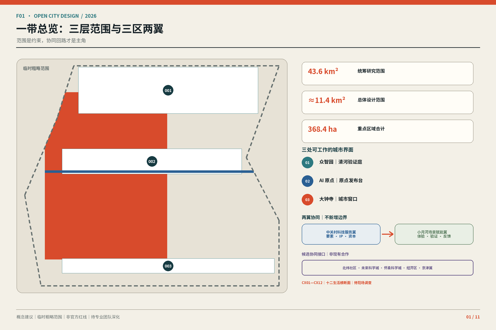
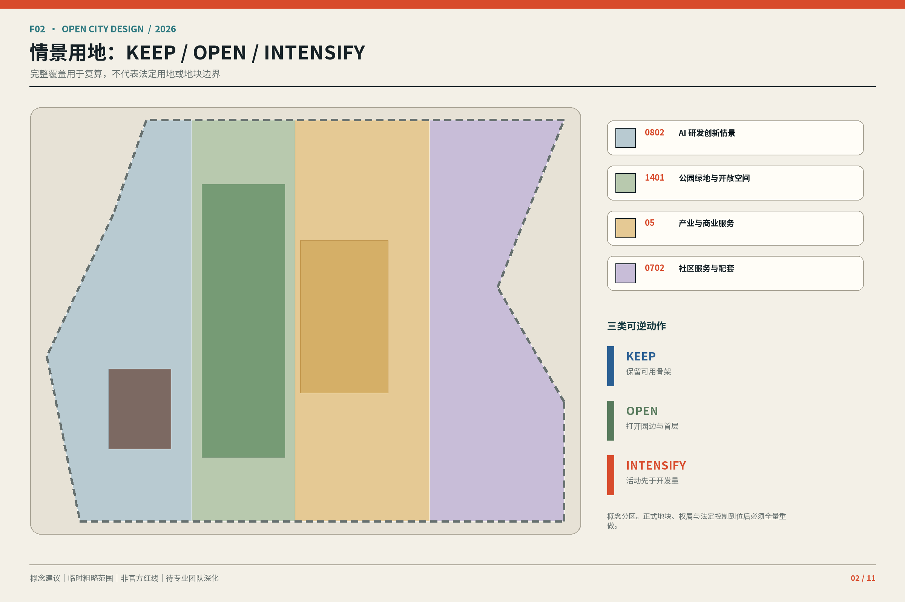
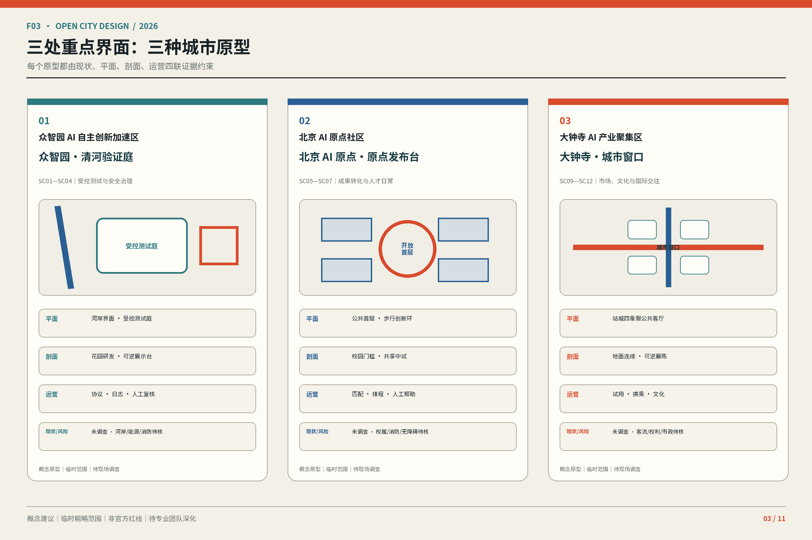
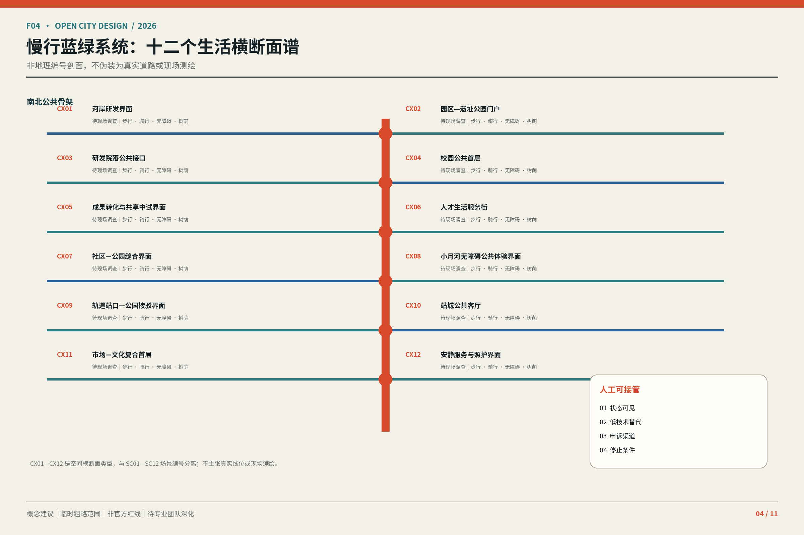
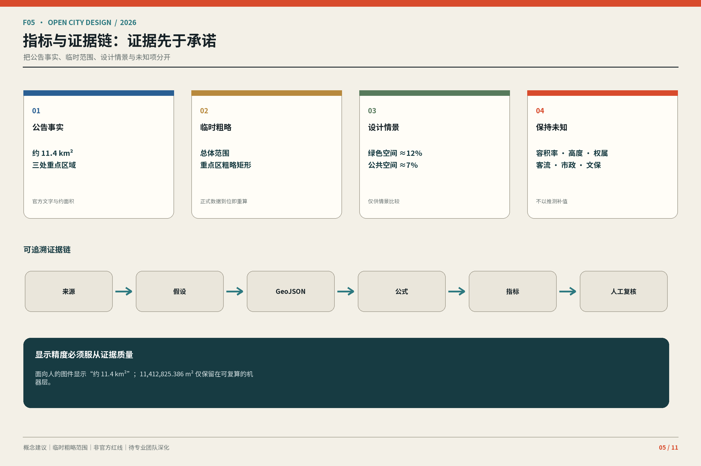
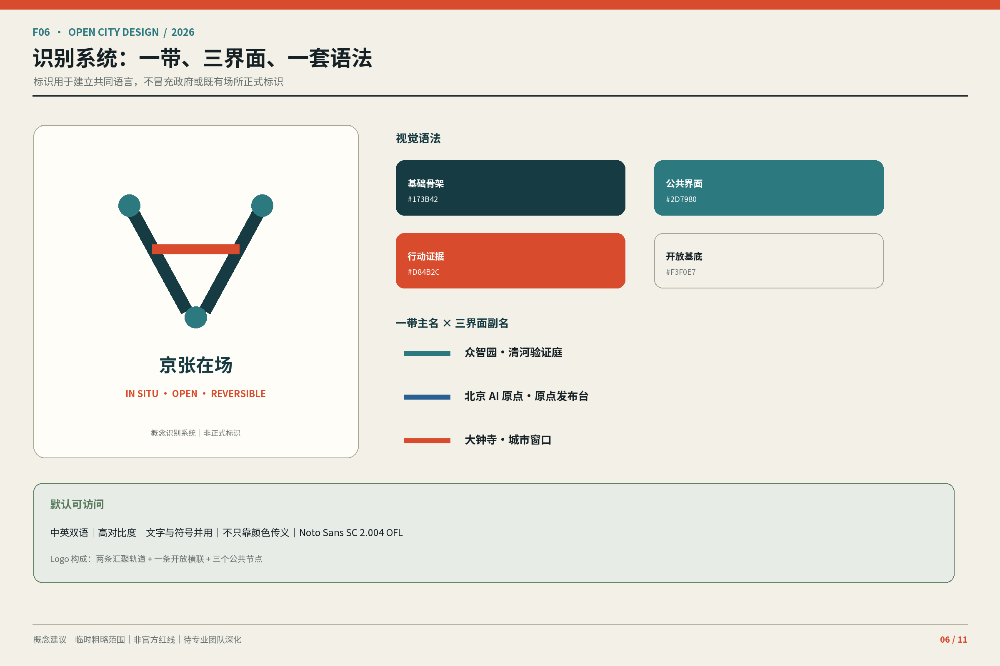
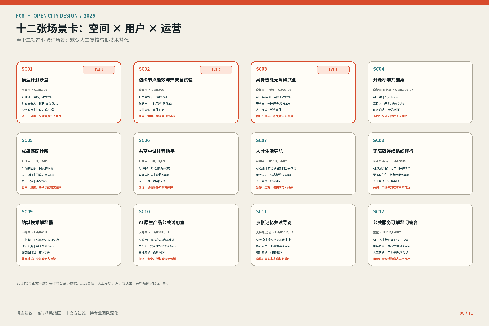
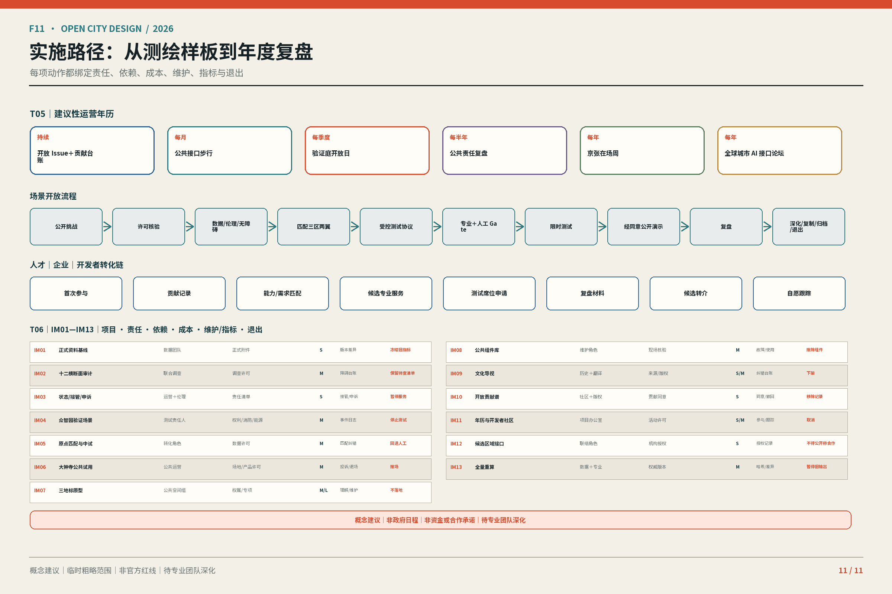

本页以 11 张相互独立的设计板组织人类阅读层。所有地图均由投稿包内 GeoJSON 绘制；临时范围以虚线弱化，情景图层不冒充现场底图或法定规划。
任务覆盖与自检状态
本页显式覆盖：总览地图、三层范围、重点区域、用地分区、交通慢行、蓝绿公共空间、建筑、更新项目、AI 场景、核心指标、来源与假设。每项结论均回到结构化证据与停止条件。

F01 · 一带总览：三层范围与三区两翼范围是约束，协同回路才是主角
F02 · 情景用地：KEEP / OPEN / INTENSIFY完整覆盖用于复算，不代表法定用地或地块边界
F03 · 三处重点界面：三种城市原型每个原型都由现状、平面、剖面、运营四联证据约束
F04 · 慢行蓝绿系统：十二个生活横断面谱非地理编号剖面，不伪装为真实道路或现场测绘
F05 · 指标与证据链：证据先于承诺把公告事实、临时范围、设计情景与未知项分开
F06 · 识别系统：一带、三界面、一套语法标识用于建立共同语言，不冒充政府或既有场所正式标识 F07 · AI 创新生态：三区两翼协同回路空间、人才、算力、数据、场景与治理形成可复核闭环
F07 · AI 创新生态：三区两翼协同回路空间、人才、算力、数据、场景与治理形成可复核闭环
F08 · 十二张场景卡：空间 × 用户 × 运营至少三项产业验证场景；默认人工复核与低技术替代 F09 · 三处地标、开放贡献谱与公共空间组件库贡献可复核、可纠错、可撤回；概念组件可逆、可维护、可退出
F09 · 三处地标、开放贡献谱与公共空间组件库贡献可复核、可纠错、可撤回；概念组件可逆、可维护、可退出 F10 · 文化叙事与导视：时间成为空间坐标京张铁路、中关村创新与 AI 透明治理并置而不混同
F10 · 文化叙事与导视：时间成为空间坐标京张铁路、中关村创新与 AI 透明治理并置而不混同
F11 · 实施路径：从测绘样板到年度复盘每项动作都绑定责任、依赖、成本、维护、指标与退出证据与限制
范围状态
SITE 与 KEY_AREA 均为 provisional_rough；官方多边形到位后必须重算图层、指标、图件与 PDF。
未知项
容积率、高度、道路红线、权属、市政、客流、停车、文保与工程可行性均未在本页填补。